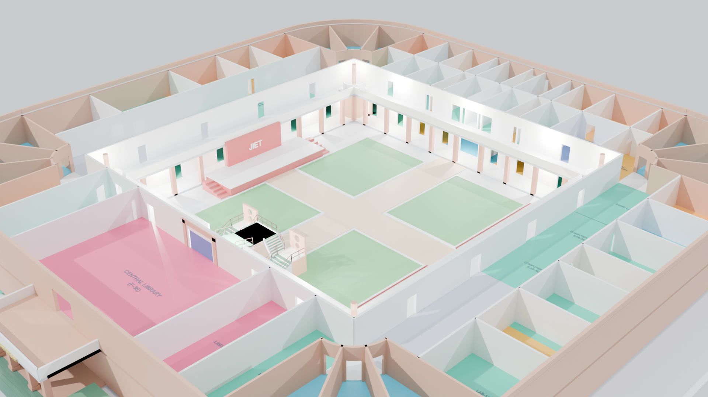

Flagship Digital Twin
Blender 5.2
React Three Fiber
Zustand
SQL.js WASM
UNIPATH: JIET 3D Digital Twin
Interactive 3D campus twin and turn-by-turn indoor wayfinding system for JIET Jodhpur. Procedurally modeled in Blender with 61 rooms and 4 hubs, featuring real-time topological routing, helical staircase elevation interpolation, and live peer radar.
61 + 4
Rooms & Arterial Hubs
3,721
Collision-Free Paths
359 / 359
Passing Vitest Checks
Built in collaboration with The 4 Musketeers team at JIET Jodhpur.